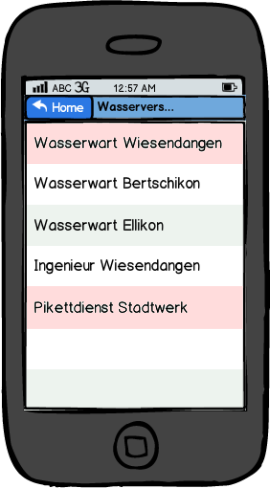

OffSpick (Offizier Spick - App) |
03:34 - das Telefon reisst einem aus dem Schlaf: 03:41 - Offiziere treffen am Schadenplatz ein, verschaffen sich einen Überblick und legen das Vorgehen fest: Abschiebern der Wasserleitung von beiden Seiten, um weiteres Ausströmen von Wasser zu verhindern 03:44 - es werden weitere Mittel benötigt: Wasserwart Wiesendangen, Pikettdienst Stadtwerk, Baugeschäft Brossi mit Bagger Hier setzt die mit HTML5/jQueryMobile aufgebaute WebApp an: |
 |